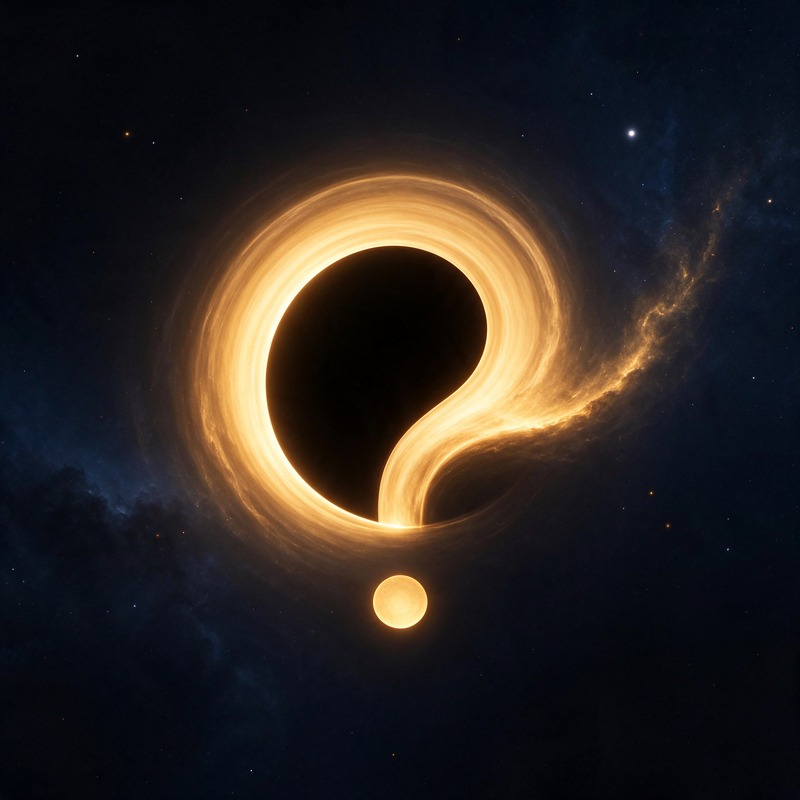

What if…? Journeys through the possible.
Chaîne YouTube de scénarios hypothétiques : « Et si la Lune disparaissait ? », « Et si on arrêtait de dormir ? »… Chaque vidéo explore une question et ses conséquences, minute après minute.
L'application « Ifstorm Automation » sert uniquement à mettre en ligne les vidéos de la chaîne sur son propre compte YouTube.
Règles de confidentialité · Conditions d'utilisation
Contact : bryanbrumaud1@gmail.com